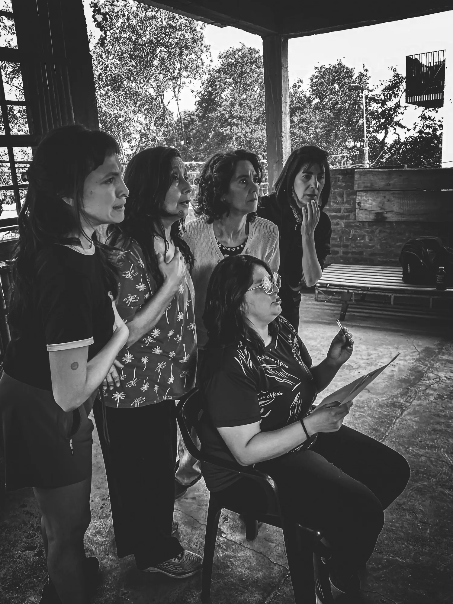
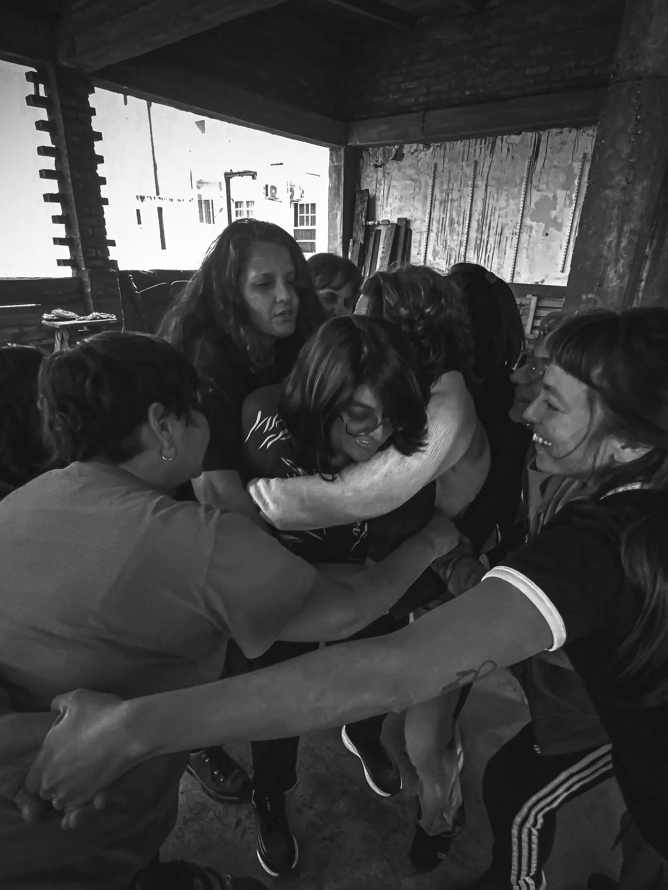
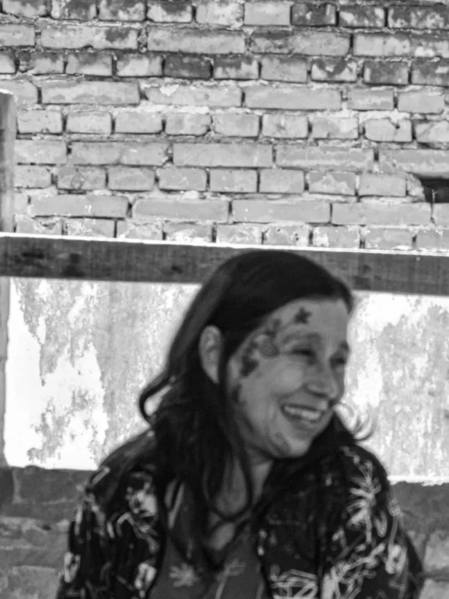
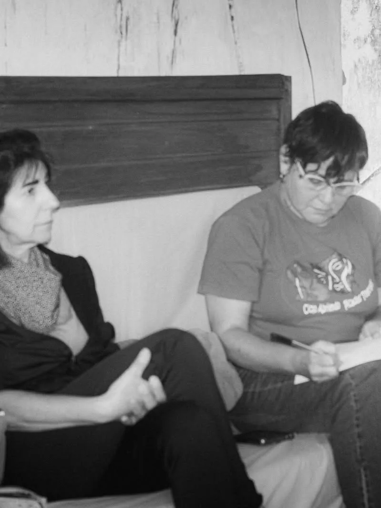

La Trama Colectiva
La Trama Colectiva es una experiencia de creación artística y construcción política que reúne a mujeres alrededor del cuerpo, la palabra, la escena y la memoria, en el marco de las actividades por el 25 de noviembre, Día Internacional de la Eliminación de la Violencia contra las Mujeres.
Mi participación desde la fotografía propone acompañar y documentar ese proceso colectivo, no solamente como registro de una práctica artística, sino como testimonio de una forma de organización, resistencia y producción de sentidos.
Me interesa fotografiar lo que sucede entre las mujeres cuando crean juntas, los gestos, las complicidades, las tensiones, los cuerpos que ocupan el espacio y las voces que se encuentran. Porque el feminismo también se construye en esos territorios sensibles donde lo personal deja de ser una experiencia aislada para convertirse en una fuerza colectiva.
En La Trama Colectiva la fotografía dialoga con las artes escénicas y la militancia feminista, entendiendo que el arte no está por fuera de las disputas políticas de nuestro tiempo.
No busco solamente documentar una obra. Me interesa dejar memoria de las mujeres que se organizan, que producen cultura y que se niegan a aceptar la violencia como destino.
Porque ninguna trama se sostiene con un solo hilo y ninguna transformación feminista se construye en soledad.




Obra
Seguir recorriendo